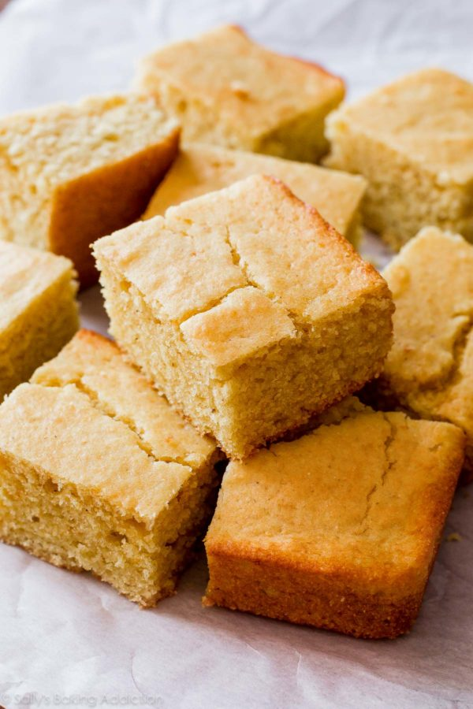

Golden Sweet Cornbread

This time honored bread wins the heart of Southern Americans
Cornbread is a quick bread made with cornmeal, associated with the cuisine of the Southern United States,
with origins in Native American cuisine.
Cornbread is a popular item in Southern cooking enjoyed by many people for its texture and aroma.
Cornbread can be baked, fried, or (rarely) steamed. Steamed cornbread is mushy, chewier, and more like cornmeal pudding.
Ingredients
3 1/2 teaspoon baking powder
Steps
Preheat oven to 400 degrees. Spray or lightly grease a 9 inch pan
In a large bowl, combine flour, cornmeal, sugar, and and baking powder. Stir in egg, milk and oil until combined. Pour batter into pan
Bake in preheated oven for 20 to 25 mintues, or until toothpick comes out clean